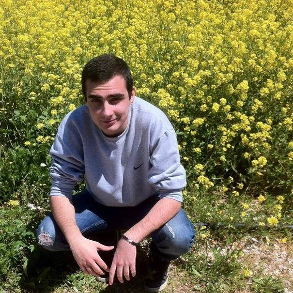
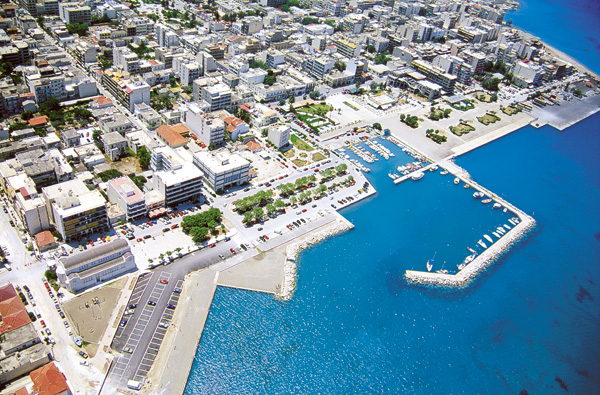
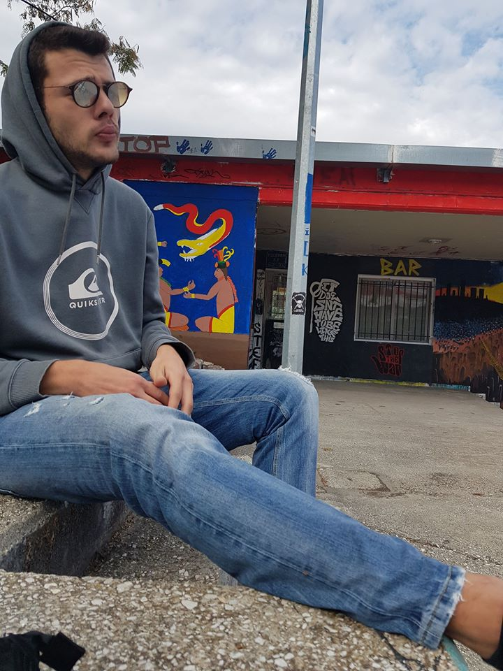

Welcome to Programmaniacs
Βασίλης Μαγδαλίδης 3755


Ονομάζομαι Βασίλης Μαγδαλίδης κατάγομαι απο την Κόρινθο.Aσχολούμαι με τον προγραμματισμό πιο συγκεκριμένα με: C++,JAVASCRIPT,HTML5.
Άγγελος Δευτεραίος 3719

 Λέγομαι Άγγελος Δευτεραίος και ο τόπος καταγώγης μου είναι η Αλεξανδρούπολη.Είμαι προγραμματιστής και ασχολούμαι:JAVA,HTML5,JAVASCRIPT.
Λέγομαι Άγγελος Δευτεραίος και ο τόπος καταγώγης μου είναι η Αλεξανδρούπολη.Είμαι προγραμματιστής και ασχολούμαι:JAVA,HTML5,JAVASCRIPT.